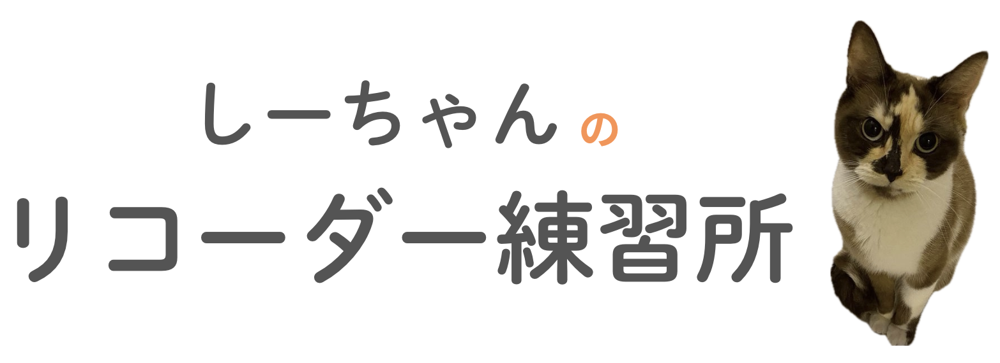

<header>
    <div class="container">
        <div class="logo-container">
            <a href="index.html" aria-label="ホームページに戻る">
                
            </a>
        </div>
        
        <nav class="main-nav">
            <a href="index.html">運指一覧</a>
            <a href="sequence.html">ドレミで楽譜</a>
            <a href="samples.html">練習曲</a>
        </nav>
    </div>
</header>